Des temps de louange festifs et priants, pour faire ensemble l’expérience d’une foi joyeuse. Depuis 2014, dans les églises de Wallonie, de Bruxelles et jusqu’à Lourdes.
« C’est une grande joie pour moi de vous recommander le groupe Jesus’Trip. Grâce à lui, l’Évangile devient musique pour les jeunes. C’est comme si Jésus parlait aujourd’hui en direct.
Par la musique, ce groupe de pop-louange crée une ambiance de bonheur et d’amitié. Il relaie tous les sentiments de l’humanité actuelle et les transforme en espérance. Allez-y !Écoutez-les ! Participez aux concerts et aux activités ! Je l’ai fait, j’y ai même chanté ! Je n’ai pas été déçu, j’ai été enchanté ! »
C’est la première fois que deux nouveaux musiciens rejoignent l’aventure Jesus’Trip : Joanna Verwilghen au chant et l’abbé Frédéric Kienen à la basse et à la clarinette. Venez découvrir le groupe à cinq !
Clin d’œil de l’histoire : c’est déjà à Battice, en septembre 2015, que Jesus’Trip présentait son premier album.
Jesus’Trip, c’est d’abord l’histoire de trois amis, Luc, Gaël et Nathan, que la vie a réunis sur les routes des pèlerinages bien avant de les réunir sur une scène.
Leur amitié est née là où beaucoup de jeunes chrétiens se découvrent : au MEJ, dans les camps d’été, sur la colline de Taizé et, surtout, à Lourdes. Le nom, lui, est né d’une boutade. Luc rêvait de créer une agence de voyages pour emmener les jeunes en pèlerinage, et un ami lui a lancé « Jesus’Trip » pour rire. L’agence n’a jamais vu le jour, mais le nom est resté.
Au printemps 2014, à Verviers, les trois amis acceptent d’animer une veillée qui ne devait être qu’un « one-shot ». La soirée est si forte, pour le public comme pour eux, que les invitations affluent dès le lendemain. Suivent un premier album, Dance for God, puis des tournées qui les mènent de Bruxelles à Mons, d’Esneux à Maredsous, et jusqu’à la basilique Saint-Pie X de Lourdes.
Le nom est né d’une boutade, le groupe d’une veillée.
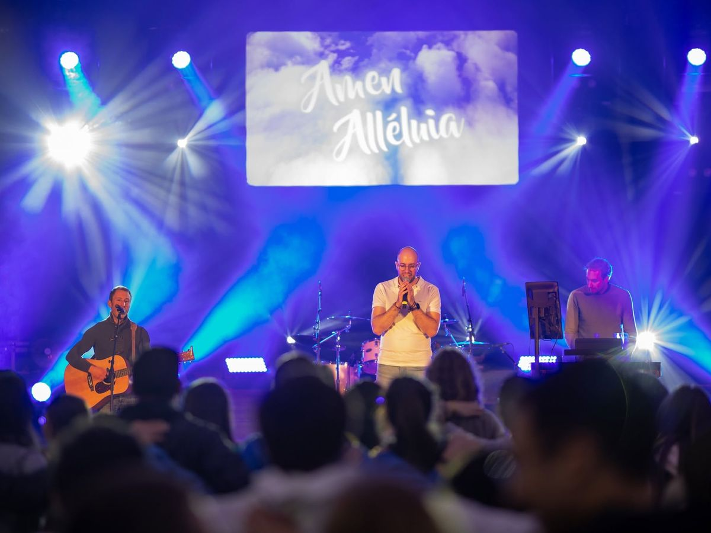
Un temps de louange, sous les lumières de Sound-Maker
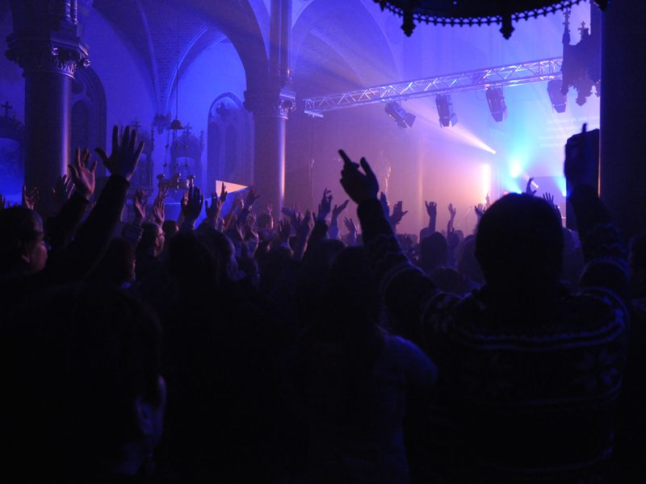
Verviers, là où tout a commencé
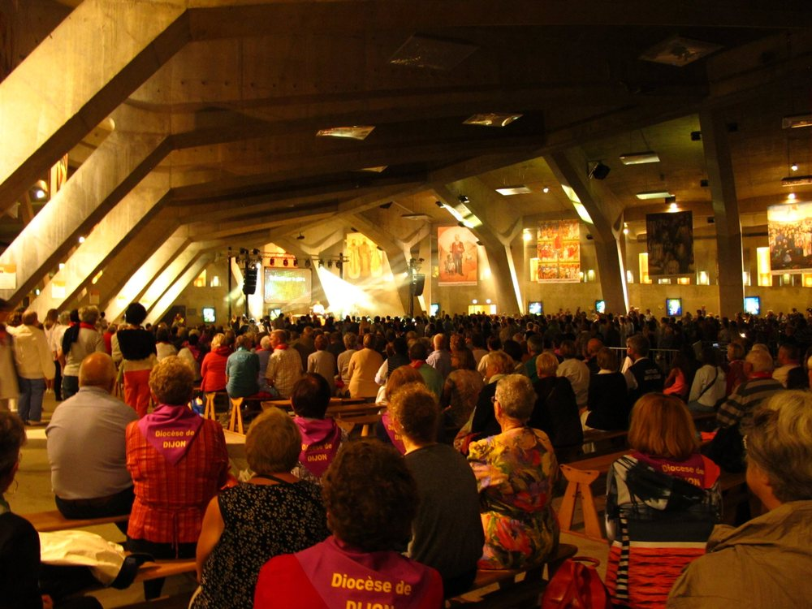
Lourdes, 2016 : la basilique Saint-Pie X
Ce qui nous tient à cœur
JoieCelle du Christ ressuscité, qui se multiplie quand on la chante ensemble.
FraternitéDes soirées qui tissent des liens entre amis, en famille et entre générations.
AccueilChacun est le bienvenu, tel qu’il est : croyant convaincu, curieux ou en recherche.
IntérioritéLa fête mène quelque part : vers soi-même, vers les autres, vers Dieu.
GratuitéNos musiciens et notre manageuse sont bénévoles, sans cachet ni défraiement.
ExigenceChaque soirée est préparée avec soin, entourés de professionnels.
Et le « & Co » ?
Une histoire née à Lourdes
les 3 amis du début+2 nouveaux compagnons de route, rejoints au pèlerinage à Lourdes=
5musiciens
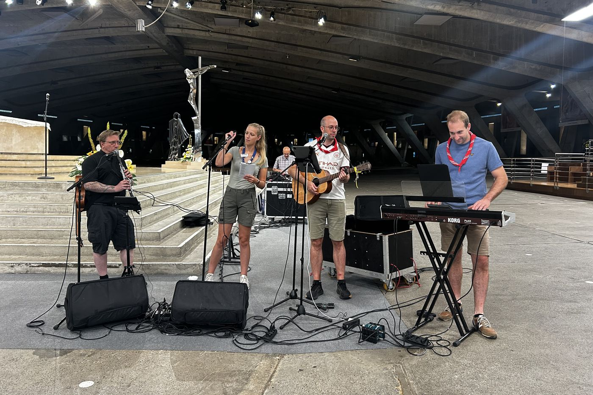
J’Co à Lourdes
encore un one-shot… qui dure !
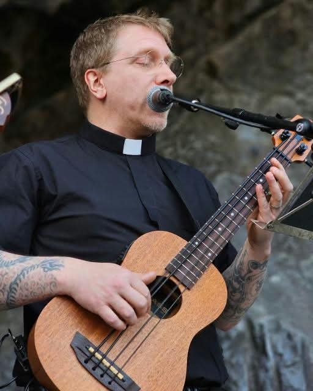
au ukulélé basse !
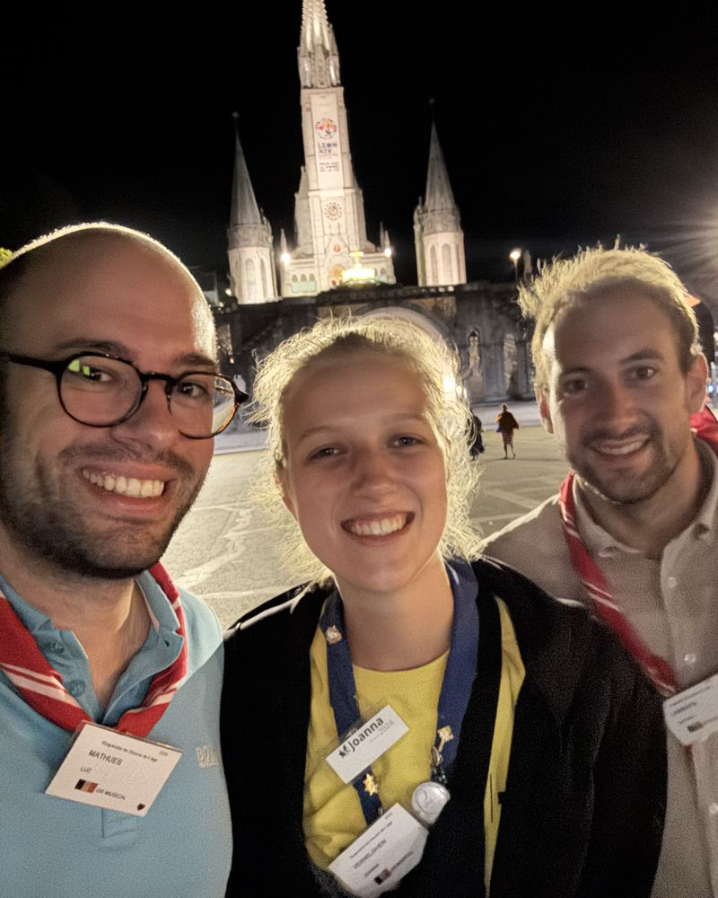
Luc, Joanna et Nathan à Lourdes
Pendant des années, Jesus’Trip s’est conjugué à trois. Puis, en 2026, un appel arrive en urgence : il faut animer le pèlerinage du diocèse de Liège à Lourdes. Gaël ne peut pas être du voyage. Luc et Nathan font alors appel à deux amis qu’ils connaissent bien, Joanna Verwilghen et l’abbé Frédéric Kienen, pour former un groupe éphémère baptisé « J’Co », à lire « J’aime & Co ».
Encore une fois, ce devait être un one-shot. Mais à Lourdes, dès la messe d’ouverture dans la basilique Saint-Pie X, les liens se tissent, et la musique aussi. Au retour, une évidence : nous avons décidé de prolonger l’aventure ensemble. Jesus’Trip garde son nom, y ajoute le « & Co » de Lourdes et compte désormais cinq musiciens sur scène.
« Co » comme compagnie, comme compagnons de route : on ne marche jamais seul vers Dieu.
Une fois de plus, tout s’est joué à Lourdes.
Une soirée avec nous
Jump, Sing & Pray
Ce que nous proposons n’est pas un concert : c’est un temps de louange et de témoignage. Nous voulons faire vivre à chacun l’expérience de la louange, mais aussi celle de la prière, avec autant de joie que de profondeur. Chaque soirée se déroule comme une vague.
1234ça monte !silence et prièrela joie éclate !avec Marie
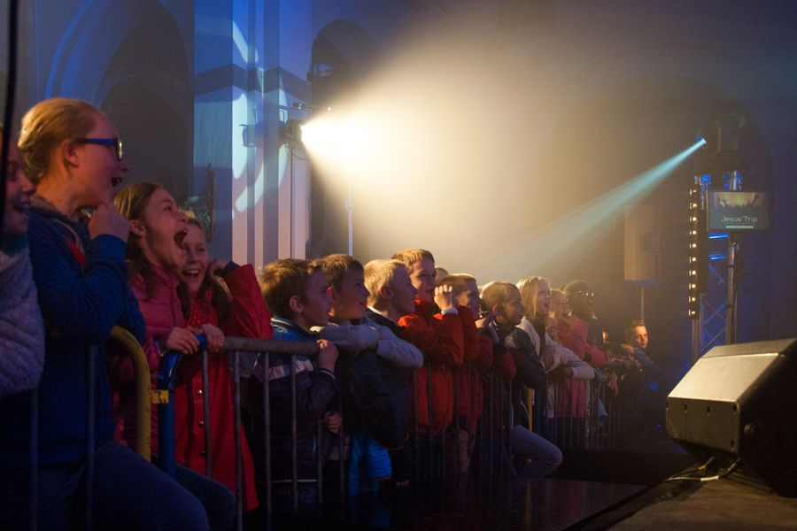
La vague monte
l’accueil
On commence fort : des chants entraînants mettent toute l’assemblée debout. Si chanter, c’est prier deux fois, et danser, prier quatre fois, nous vous ferons prier huit fois !
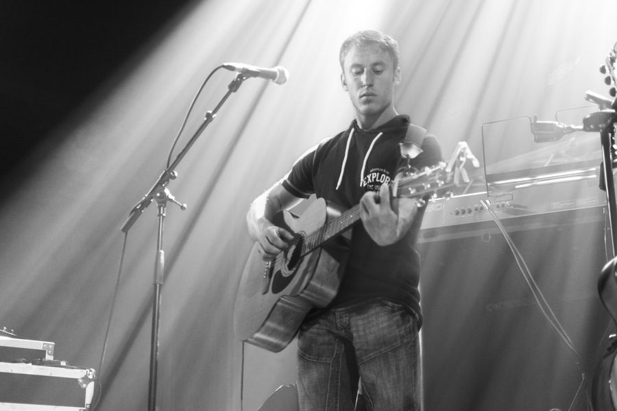
La prière
la profondeur
La vague redescend, la lumière baisse, le silence s’installe : un temps d’intériorité et de prière, souvent porté par un témoignage.
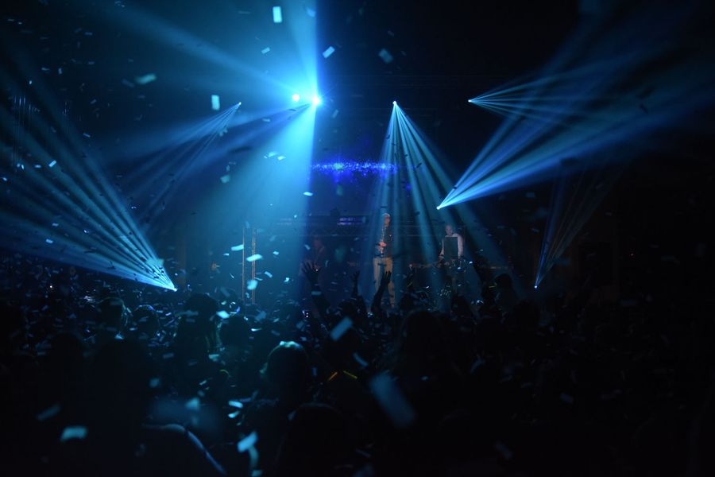
La résurrection
la louange éclate
Après la prière, la vague remonte plus fort que jamais : une joie libératrice. Il n’y a pas de vraie joie sans ce passage par l’intériorité.
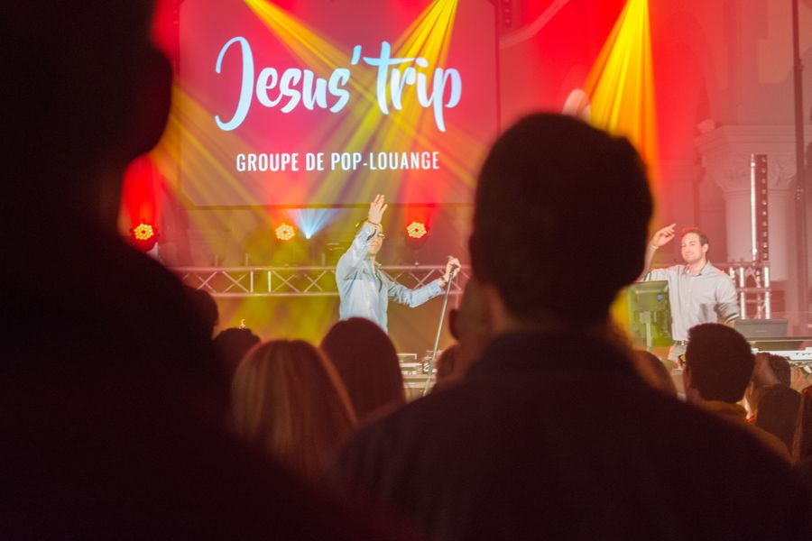
Avec Marie
l’envoi
Nous terminons toujours par un chant à Marie : un clin d’œil à Lourdes, le lieu qui nous a tous réunis, et une manière de repartir en paix.
« La prière est la source de ma joie. »
Luc Mathues, fondateur du groupe
Notre répertoire
Nos chants, nos compositions
Le cœur de Jesus’Trip, ce sont ses propres chansons : une trentaine de compositions, écrites pour la plupart par Gaël, quelques-unes par Luc, et arrangées à trois avec Nathan.
Quelques reprises s’y glissent aussi. Côté sonorités, on passe volontiers du latino à l’électro, avec un détour par la country. Les thèmes sont ceux qui nous font vivre : la joie, la résurrection, la miséricorde, la rencontre personnelle avec Dieu, les Béatitudes et la confiance en Marie. Avec le « & Co », la basse, la clarinette et une voix féminine viennent enrichir les arrangements.
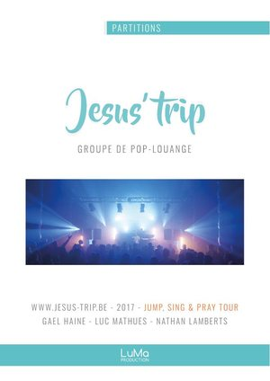
Chantez-les chez vous
Le livret de partitions
Pour les animateurs, les chorales et les groupes de jeunes : mélodies, paroles et accords de quatre de nos chants (Alléluia, il est ressuscité !, Génération François 1er, Je te salue, Marie et Louez Dieu).
Jesus’Trip & Co, ce sont 12 personnes : cinq musiciens et une manageuse, tous bénévoles, notre équipe technique et les professionnels de Sound-Maker. Des laïcs et un prêtre, des amis de longue date et de nouveaux compagnons de route.
Sur scène
depuis2014
les 3 amis du début
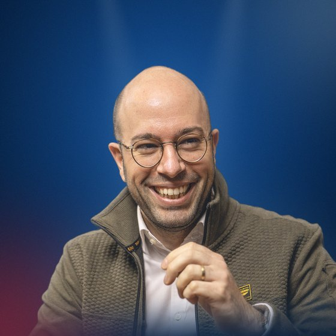
le fondateur !
Luc Mathues
Animation et chant · fondateur
Il a donné son nom au groupe et en tient la barre. Tout a basculé à quinze ans, à Taizé ; le MEJ lui a donné le goût de l’engagement. Sur scène, il anime, chante et embarque la salle.
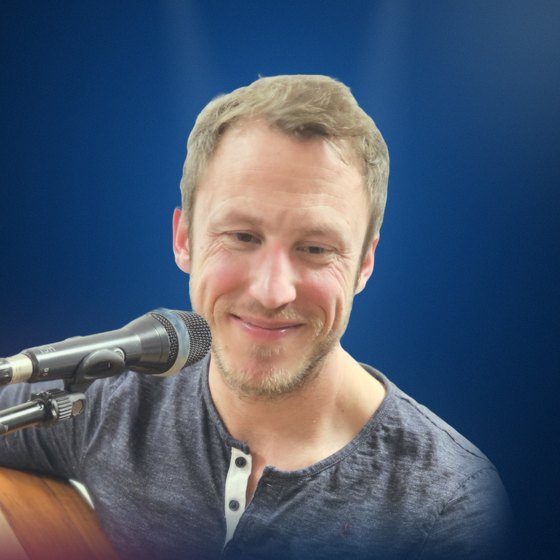
la plume !
Gaël Haine
Guitare, chant et composition
La plume du groupe : il a écrit la plupart des chansons. Les rencontres du MEJ, puis Taizé, vécu comme un électrochoc, ont tout changé pour lui.
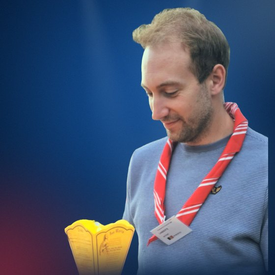
aux claviers !
Nathan Lamberts
Claviers
Il tient les claviers et cosigne tous les arrangements. C’est à Lourdes qu’il a rencontré Gaël ; il sera plus tard responsable de camps au MEJ.
Lourdes2026
2 nouveaux compagnons de route, rejoints au pèlerinage à Lourdes
Joanna Verwilghen
Chant
Benjamine de la scène et coprésidente du MEJ. Appelée en renfort pour Lourdes, elle est restée : les refrains se chantent désormais à voix mêlées.
basse & clarinette !
Abbé Frédéric Kienen
Basse et clarinette
Prêtre du diocèse de Liège et bassiste de longue date, il a lui aussi rejoint l’aventure à Lourdes. Chez nous, laïcs et prêtre louent Dieu d’une même voix.
En coulisse
L’équipe de l’ombre
sans eux, pas de concert !
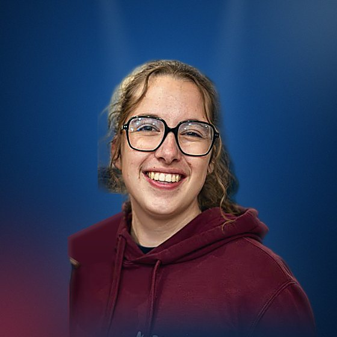
tient l’agenda !
Manon Franssen
Manageuse
Coprésidente du MEJ aux côtés de Joanna, elle tient l’agenda et fait le lien avec les organisateurs, du premier coup de fil au dernier accord.
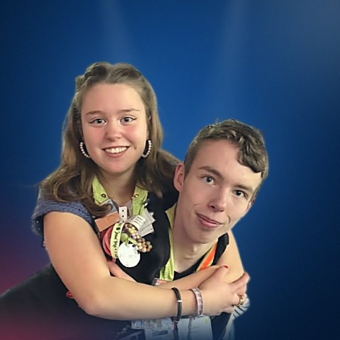
à la régie !
Anaïs et Quentin
Régie technique et régie vidéo
Un précieux coup de main pour le groupe, à la régie technique et à la régie vidéo : ce sont eux qui projettent les paroles pendant les concerts, pour que toute l’assemblée puisse chanter.
Les pros
son, lumière et production
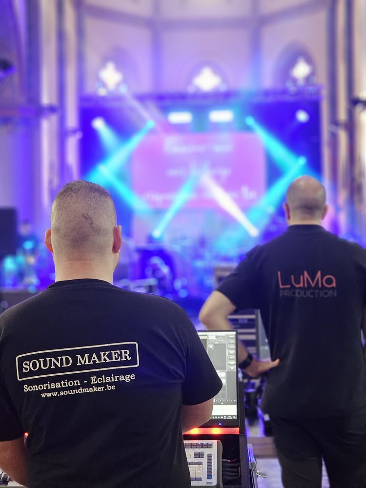
Sound-Maker
Son, lumière et vidéo · Verviers
Notre équipe technique depuis le début : transport, montage, son, lumière et vidéo, de la petite église de village à la grande nef. Leur savoir-faire fait de chaque temps de louange un vrai concert.
LuMa Production
Producteur du groupe
LuMa Production produit Jesus’Trip & Co : elle organise les concerts et assure la gestion du groupe.
Témoignages
Ils l’ont vécu
Participants, élèves, organisateurs : quelques mots reçus au fil des soirées.
merci pour vos mots !
« L’ambiance que vous avez donnée à ce temps de louange était incroyable ! Merci, et franchement, vous assurez ! »
Allan 19 ans, Liège
« Au-delà de la qualité de votre animation, il y a votre témoignage, qui nous a profondément touchés. Bravo à toute l’équipe ! »
Myriam jeune adulte, Verviers
« Je ne savais pas du tout à quoi m’attendre, et je ne fus pas déçu ! La musique fut tout simplement magnifique. Invitez-les dans votre paroisse : vous ne le regretterez pas ! »
Bastien 20 ans, Nivelles
« J’ai eu les larmes aux yeux lors du moment de prière, mais très vite la joie est revenue. Tout sentait l’improvisation, mais j’ai remarqué tout le travail derrière. »
Serge 60 ans, Verviers
« Nous avons passé pendant cette soirée un chouette moment de prière avec des super musiciens et une ambiance de fou. Tout le collège était rassemblé pour chanter, danser et louer Dieu tous ensemble. »
Collège de Maredsous après une soirée au collège
« Le professionnalisme des jeunes a marqué les esprits. Chacun a pu apprécier leur témoignage vivant, rempli d’enthousiasme et de vérité. »
Jeunes Cathos Liège après le Ressucito Day à Verviers
Et vous, vous l’avez vécu ?
Une soirée, un chant, un moment de prière qui vous a marqué ? Racontez-le-nous : avec votre accord, votre témoignage pourra rejoindre ce mur.
Dans la presse
Ils parlent de nous
Cathobel, L’Avenir, le collège de Maredsous : quelques articles parus depuis nos débuts.
Journalistes : notre dossier de présentation rassemble l’histoire, l’équipe et les chiffres, et notre logo existe dans tous les formats ; photos sur demande auprès de Luc Mathues.
Paroisses, unités pastorales, mouvements de jeunesse, écoles, pèlerinages : chaque soirée est portée par un organisateur local, et nous venons partout où l’on a envie de louer Dieu ensemble, dans une église, une salle ou un sanctuaire.
Allumer une flamme
Une soirée avec nous prend tout son sens lorsqu’elle s’inscrit dans une vision. Nous aimons être invités pour lancer ou relancer quelque chose : une année pastorale, la préparation d’un groupe de confirmands, un rassemblement de jeunes, le renouveau d’une communauté. Notre souhait n’est pas de passer, mais d’allumer un feu qui continue de brûler bien après la dernière chanson.
Comment ça se passe ?
1
On fait connaissanceVous nous parlez de votre projet, de votre communauté et de votre public : la soirée s’inscrit dans votre vision, pas l’inverse.
2
On prépare ensembleDéroulé, témoignages, place des jeunes, technique avec Sound-Maker, communication : nous construisons la soirée avec vous.
3
Le jour JMontage, balances, puis place à la louange ! Sound-Maker assure la technique du début à la fin.
4
Et après, tout commenceLa soirée n’est pas une fin mais un point de départ. Nous la relisons avec vous, pour que la flamme continue de grandir.